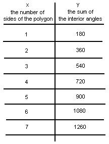
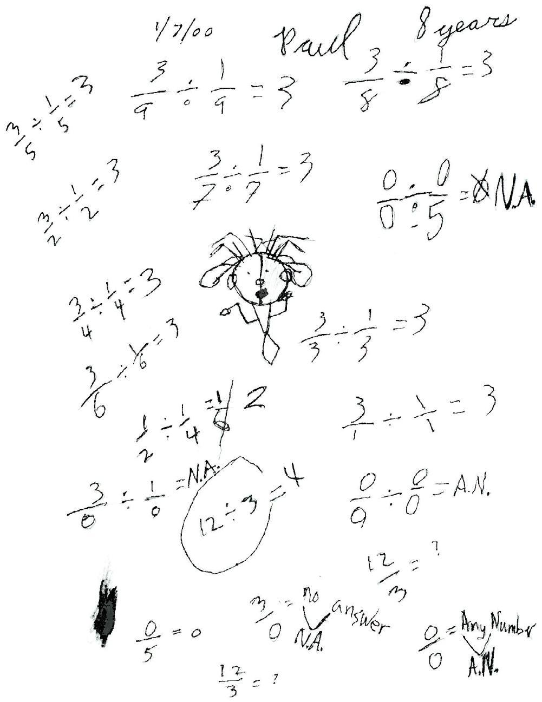

I started Paul with the problem 
Paul, a 3rd grader, finds a pattern
I was working with Paul and a rotogram, to find the sum of the angles of a polygon. Paul had difficulty with the idea of rotating clockwise and counterclockwise. Later when his Dad came in he told me that they have all digital clocks in their home, except for one. So Paul was not sure how to read a regular clock.
We made a table of values where x = the number of sides of the polygon and y= the sum of the interior angles.

Paul noticed that the 360' was one circle and 540' was 1 1/2 circles.
In looking for a pattern in the table he made 2 observations. "In the 100's, odd numbers are getting higher", and "In the 10's even numbers are getting lower".
Paul, a 3rd grader, divides by ZERO
I started Paul with the problem
(See the copy of the page from his book below. This problem is down near his art work),
-which means how many quarters make one-half? Like in the problem 12 divided by 3 = ? Or what times 3 makes 12? We worked our way up the page, and he caught on to the pattern. I asked him to make up some problems like these. This is where the interesting part comes in! He starts to divide by zero!

We discussed 3/0 = ? as what times 0 = 3? And he said there is no number times 0 = 3. His notation was N.A. for no answer. The we talked about 0/5 = ? What times 5 = 0? and of course this was 0. What about 0/0=? and he came up with the fact that any number times 0 = 0. So 0/0= Any Number (A.N.); this is equivalent to AN x 0 = 0.